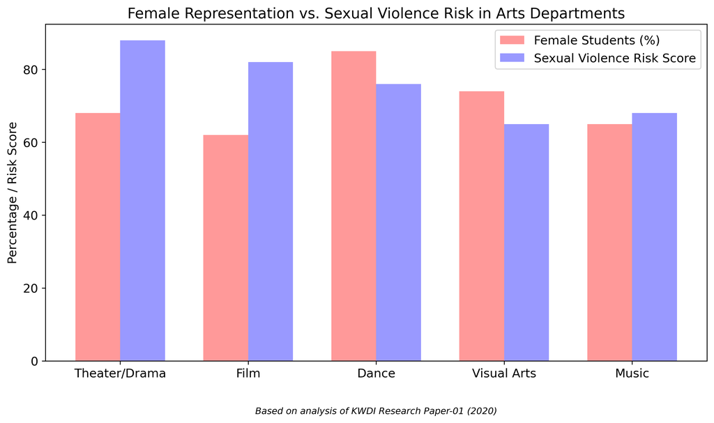

Gender Watchdog documents cases of sexual violence, institutional cover-ups, and misuse of public funds at Korean universities, particularly Dongguk University. We aim to increase awareness, provide resources for survivors, and demand accountability.

Of female arts students experience sexual violence (Korean Women's Development Institute)
Of campus sexual violence is perpetrated by professors
Dongguk University film program's sexual violence risk score
Dongguk University maintains a film program with the highest risk score (81/100) for sexual violence according to the Korean Women's Development Institute. The Graduate School of Digital Image and Contents has an all-male faculty.
Dongguk University disbanded its Women's Student Council in 2018 during the height of Korea's MeToo movement, effectively silencing campus advocates for sexual violence survivors.
In a 2016 incident, Dongguk University took no action for six months after being notified by prosecutors about a sexual assault case, demonstrating serious institutional failure.
Dongguk University claimed 381 international university partnerships that do not exist in reality. This appears to have been done to secure government funding.
The so-called gender sensitivity test provided by Dongguk University perpetuates harmful myths about sexual violence. We provide evidence-based, accurate education on preventing sexual violence and supporting survivors.
Note: Dongguk's misleading use of "gender sensitivity" downplays issues that the Korean Women's Development Institute (KWDI) clearly defines as sexual violence in their 2020 report.
This question reinforces victim-blaming and shifts responsibility from perpetrators to victims.
Silence is not consent. This ignores the importance of clear, affirmative consent.
This propagates the dangerous misconception that 'no' means 'yes'.
"We are honored to receive support from End Rape On Campus (@EndRapeOnCampus) in exposing the systemic sexual violence cover-up at Dongguk University. Thank you EROC for amplifying our efforts, providing solidarity, and advising on advocacy."